Personagens
Saori Kido (Atena)
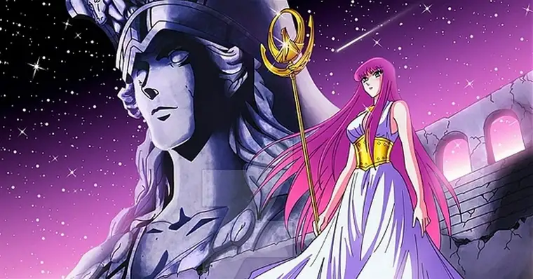
Saori Kido é um dos principais nomes, já que ela é a atual encarnação de Atena, a Deusa que governa os humanos no universo da obra. Diferente de outros Deuses cruéis, Atena busca proteger os humanos dessa tirania, sendo bem gentil.
Ela se dispõe a sacrificar sua própria vida para que a humanidade não caia nas mãos de inimigos poderosos, mas conta com a ajuda de seus Cavaleiros (principalmente Seiya, Shiriyu, Shun, Hyoga e, posteriormente, Ikki).
Seiya de Pégaso
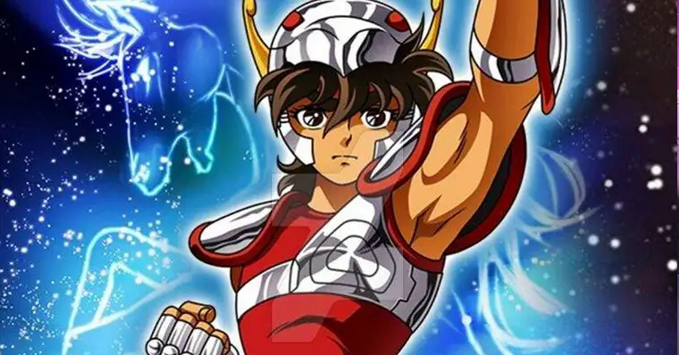
Temos o protagonista, um jovem de 13 anos que busca encontrar sua meia-irmã, chamada Seika. Ele se torna um cavaleiro para conseguir alcançar esse objetivo, afinal, se conseguisse a Armadura de Pégaso, ele conseguiria se dedicar a Saori em troca de informações sobre a Seika.
Porém, ele acaba descobrindo que Saori é a encarnação dessa Deusa e para cumprir com seu papel de cavaleiro, acaba participando de Guerras Santas para enfrentar Deuses que se colocam como rivais de Atena.
Shiryu de Dragão
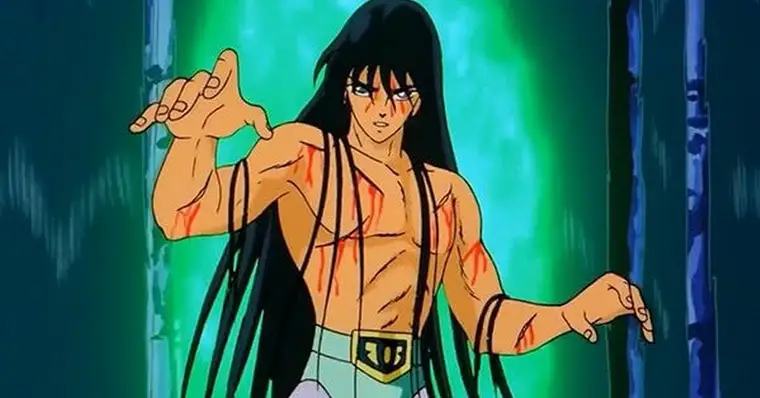
Shiryu é um jovem japonês que, assim como Seiya, fez parte dos 100 órfãos que foram enviados para treinamento.Ele é enviado para os Cinco Picos Antigos de Rozan e conquista a Armadura de Dragão.
Junto com ele, um outro personagem acaba se tornando muito querido entre os fãs: seu mestre. Shiryu é uma pessoa bastante nobre, com a gratidão e lealdade sendo duas características fortes de sua personalidade. Ao lado dos outros Cavaleiros de Atena, o garoto serve a Deusa.
Hyoga de Cisne
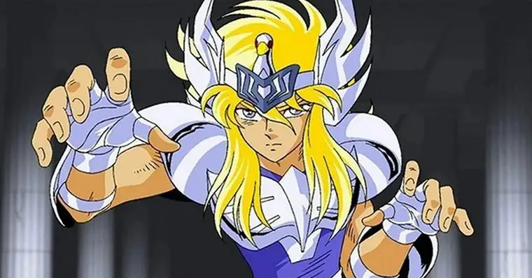
O garoto, assim como Seiya, possuía um objetivo que o levou a se tornar um Cavaleiro. Hyoga queria poder ver o corpo de sua mãe, que acabou morrendo em um naufrágio na Sibéria. Ele aceita a armadura de Cisne e se alia aos outros Cavaleiros de Atena.
Ele é bastante calmo e controlado, sendo o que menos se pronuncia entre esses protagonistas. Ele também é muito apegado aos seus ideais e apesar de parecer frio (sem trocadilhos aqui), ele é um jovem muito sensível.
Shun de Andrômeda
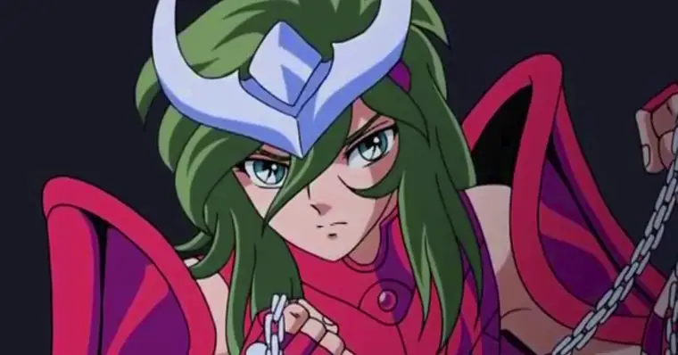
Shun é um caso à parte. Diferente dos demais, que acabaram se adaptando a violência dessa rotina de treinamentos, ele é um garoto que odeia ferir outras pessoas. Mas Shun carrega um detalhe importante: quando ainda era um bebê, ele foi tido como a pessoa com o coração mais puro da Terra.
Isso fez com que Pandora ameaçasse sua vida na intenção de pegá-lo e transformá-lo no receptáculo perfeito para Hades. Seu irmão mais velho, Ikki, impede tal fato e futuramente ambos acabam separados para o treinamento e se tornam Cavaleiros de Atena.
Ikki de Fênix
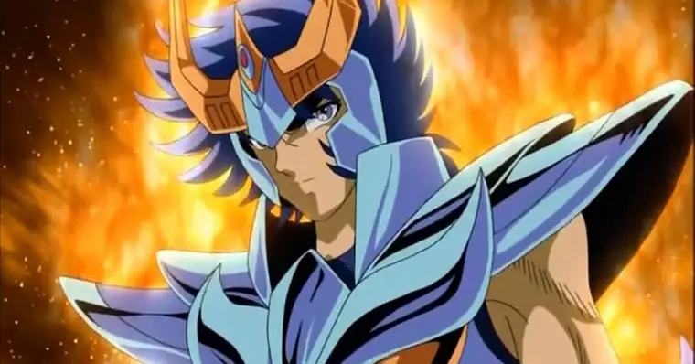
Um dos queridinhos entre os fãs, Ikki aparece na série de um jeito bem peculiar. Ele é conhecido como o mais forte entre os 100 jovens e foi enviado para a Ilha da Rainha da Morte (o pior centro de treinamento de todos). Lá, o garoto é treinado por Guilty, um homem cruel que lhe ensina que só o ódio pode tornar alguém forte.
Ele consegue sua armadura de Fênix depois de inúmeros traumas e quando retorna para a Guerra Galatica, Ikki assume o papel de antagonista desse arco. Mas essa fase durou pouco, já que depois ele fez as pazes com seu irmão e voltou a ser um aliado.
Porém, Ikki é um “lobo solitário” e devido a isso ele se mantém mais ausente, mas se seus companheiros precisam dele, ele sempre aparece no momento mais crucial para ajudar.
Hades
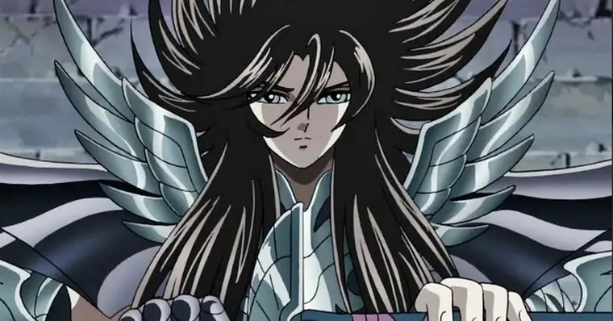
Senhor do Mundo dos Mortos e o principal antagonista da série, Hades é um dos 3 grandes Deuses do Olimpo ao lado de Zeus e Poseidon. Ele é o responsável por julgar as almas dos humanos entre o descanso eterno ou o sofrimento eterno. Ele também desempenha o papel de governante do submundo e é o inimigo declarado mais antigo da Deusa e seus Cavaleiros.
Seu desejo é tomar a Terra para si, atacando o Santuário na tentativa de tirar a vida de Atena. Ele quer tornar a Terra em um deserto, eliminando os humanos como forma de punição por terem desobedecido os Deuses e poluir seu planeta.
Os Cavalerios de Ouro

Os cavaleiros de Ouro são os 12 guerreiros mais poderosos de todos os Cavaleiros de Atena. Eram conhecidos por sua invencibilidade desde as eras mitológicas e por utilizarem Armaduras de Ouro que correspondem às 12 constelações do Zodíaco.
Como guerreiros extremamente habilidosos, eles dominam o Sétimo Sentido, a essência do Cosmo e com isso acabam desenvolvendo habilidades sobre humanas, como atingir a velocidade da luz. Porém, esse não é um posto fixo e as armaduras recebem novos donos de tempos em tempos, mesmo sem a presença de Atena na Terra.
Os 12 cavaleiros da fase clássica são: Mu de Áries, Aldebaran de Touro, Saga de Gêmeos, Máscara da Morte de Câncer, Aioria de Leão, Shaka de Virgem, Dohko de Libra, Milo de Escorpião, Aioros de Sagitário, Shura de Capricórnio, Camus de Aquário e Afrodite de Peixes.
Já no Lost Canvas, são: Shion de Ares, Hasgard de Touro, Aspros de Gêmeos, Manigold de Câncer, Regalus de Leão, Asmita de Virgem, Dohko de Libra, Kardia de Escorpião, Sísifo de Sagitário, Elcid de Capricórnio, Dégel de Aquário e Albafica de Peixes.
E no Ômega temos: Kiki de Áries, Paradox de Gêmeos, Schiller de Câncer, Micenas de Leão, Fudou de Virgem, Shiryu de Libra, Sonia de Escorpião, Seiya de Sagitário, Ionia de Capricórnio, Tokisada de Aquário e Amor de Peixes.
Tenma de Pégaso
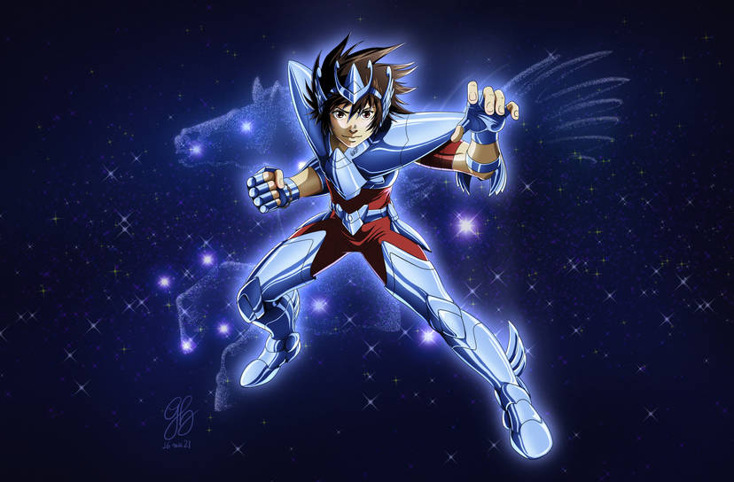
Tenma é o Cavaleiro de Pégaso que enfrenta Hades em 1743. Mesmo que tenha nascido no Castelo Heinstein, na Alemanha, onde sua mãe sempre trabalhou, Tenma tem ascendência japonesa, já que seu pai é japonês. Seus pais são Yohma de Mefistófeles e Partita de Coruja. Quando ficou orfão, foi criado em um orfanato da Itália onde nunca teve muitos amigos, exceto Alone e Sasha, respectivamente, Hades e Atena, o que causa muito espanto, pois Hades destrói o seu vilarejo.
Alone
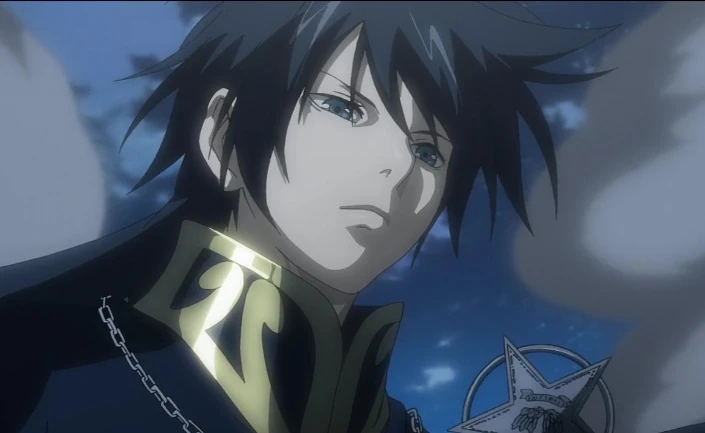
Alone nasceu em 1743 em uma vila na Itália, junto com Tenma e Sasha , que mais tarde se tornaram seus arqui-inimigos. Ele acredita que todo mundo tem um lado bom e desaprova o uso da violência. Alone sempre gostou de pintar quadros, mas como não tinha dinheiro para os materiais, trabalhou duro para comprar tinta e praticar pintura na igreja.
Sasha
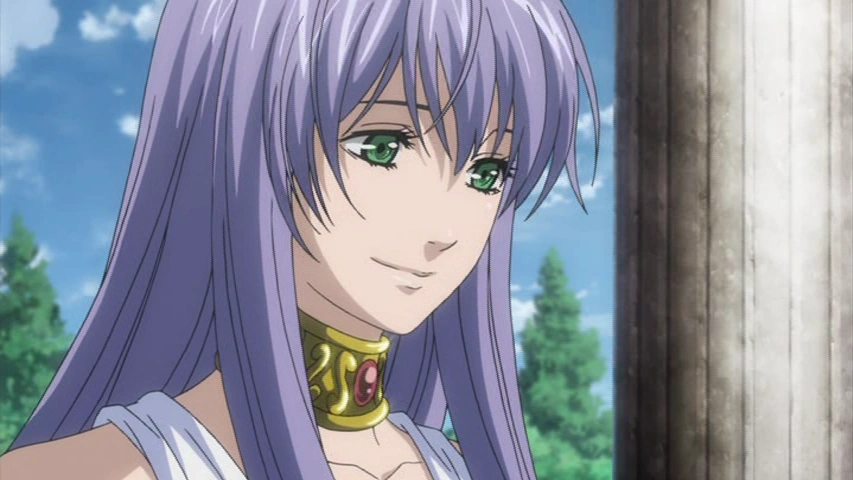
SSasha (サ ー シ ャ Sāsha) é a reencarnação de Atena no século XVIII, e uma das personagens principais do mangá Saint Seiya: The Lost Canvas, de Shiori Teshirogi. Passou a infância em um orfanato na Itália com seu amigo Tenma e seu irmão Alone (o hospedeiro do Deus Hades), antes de ser levada para o Santuário por Sísifo de Sagitário.
Pandora
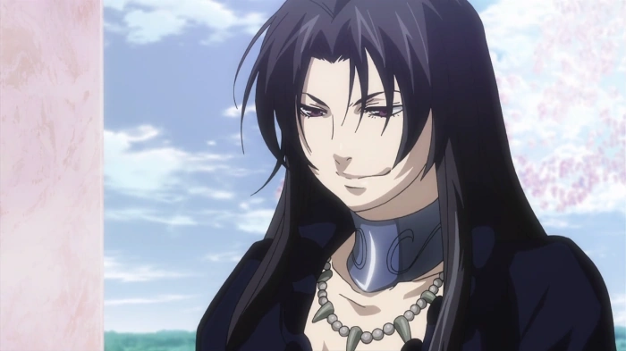
Pandora é a representante de Hades na guerra santa do século XVIII. Ela está sempre ao lado de Hades, escolhe seu hospedeiro e é a comandante geral dos 108 Espectros. De personalidade forte, Pandora guarda um imenso rancor por ter tido seu lugar como irmã de Hades tomado por Atena.
Dohko de Libra
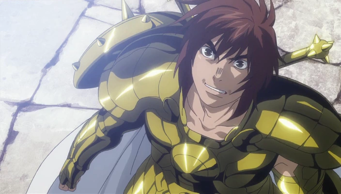
Dohko de Libra é um dos personagens principais do universo de "Saint Seiya" (também conhecido como "Os Cavaleiros do Zodíaco"), criado por Masami Kurumada. Ele é um dos doze Cavaleiros de Ouro do Santuário de Atena, representando o signo de Libra. Dohko é conhecido por sua sabedoria, habilidades excepcionais em combate e seu papel como guardião do Templo de Libra.
Shion
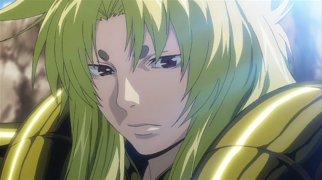
Shion de Áries (牡羊座のシオン, Ariesu no Shion?) é um Cavaleiro de Ouro que fora treinado desde sua infância diretamente por Hakurei de Altar e parceiro de batalhas de Dohko de Libra durante a Guerra Santa contra Hades e seus espectros no Século XVIII. Posteriormente, com o fim do conflito, ele seria nomeado ao cargo de Grande Mestre do Santuário de Atena, passando a liderá-lo em sua reforma durante o pós-guerra até ser assassinado por Saga de Gêmeos no século XX.
Chronos
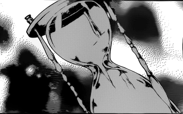
Chronos (クロノス, Kuronosu?) é o grande deus grego do tempo. Ele também é um dos dois Grandes Deuses do Tempo (宇宙の偉大な神々, Jikan no Idaina Kamigami).
Ártemis
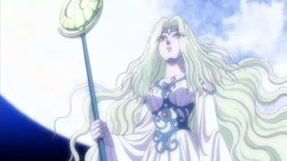
Ártemis (Άρτεμις) é a deusa da Lua e irmã gêmea de Apolo. Nos mitos de Masami Kurumada também é a irmã mais velha da deusa protetora da Terra, Atena.
Tohma
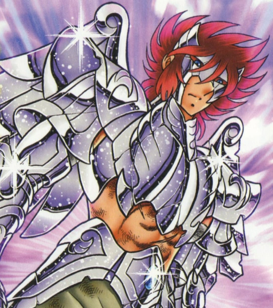
Tohma (斗馬トウマ Tōma?) é um Anjo Celeste em Saint Seiya: Next Dimension.
Havia sido expulso de seu cargo no Olimpo e acorrentado no Templo da deusa Artemis, mas ganha sua liberdade no Século XX, sendo enviado para assassinar o incapacitado Seiya de Pégaso.
Odisseu
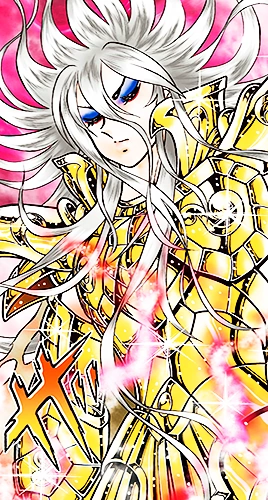
Odisseu (オデュッセウス, Odyuseusu) foi um Cavaleiro de Prata da constelação de ophiuchus que devido seu papel como curandeiro era conhecido em todo Santuário de Atena. Devido sua nobreza, aprendizado e sabedoria na medicina, além de seus feitos e atos considerados "divinos", ele fora venerado em sua vida como um homem santo por seu trabalho salvando a vidas de seus companheiros e aclamado na morte como uma figura divina por seguir até o fim sua demanda. No entanto, durante a Guerra Santa de Atena contra Hades no Século XVIII, fora proclamado pelas serpentes emissárias que invadiram as Doze Casas que ele ressurgiria como reencarnação do mítico décimo terceiro Cavaleiro de Ouro, Asclépio de Ofiúco, a fim de obter a lealdade dos Cavaleiros de Ouro para dar inicio a vingança de seu ancestral.